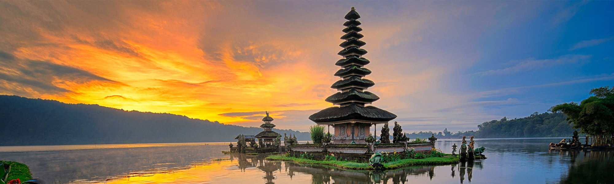

Asia Overview
Asia, the largest and most populous continent, is a treasure trove of diverse landscapes, cultures, and histories. From the icy peaks of the Himalayas to the vibrant cities of Tokyo and Bangkok, Asia offers a wide range of experiences. The continent is home to some of the world's most ancient civilizations, including China and India, which have left behind a rich cultural heritage that continues to influence the modern world.
Travelers can explore the bustling metropolises of Asia, where modern skyscrapers coexist with historical landmarks. Enjoy the serene beauty of ancient temples in Japan, the colorful markets of Thailand, or the tranquil landscapes of Vietnam. Asia's diverse cuisine, from sushi and dim sum to curries and noodles, offers a culinary journey that complements its cultural and geographical diversity.
Top Destinations in Asia
Kyoto, Japan

Kyoto, once the imperial capital of Japan, is renowned for its well-preserved traditional architecture, beautiful gardens, and ancient temples. Visitors can explore historic sites such as the Fushimi Inari Shrine with its thousands of red torii gates, the serene Kinkaku-ji (Golden Pavilion), and the traditional tea houses of Gion District. Kyoto's blend of cultural heritage and natural beauty makes it a must-visit destination for anyone interested in Japanese history and tradition.
Bali, Indonesia
Bali is a paradise island known for its stunning beaches, lush rice terraces, and vibrant culture. This Indonesian island offers a unique blend of natural beauty and cultural richness. Visitors can relax on the beautiful beaches of Seminyak and Uluwatu, explore the terraced rice fields in Ubud, and experience the island's rich traditions through its numerous festivals and ceremonies. Bali's welcoming atmosphere and diverse range of activities make it a top destination for relaxation and adventure.